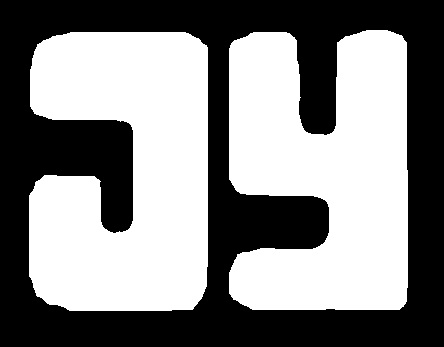

Jack Yang
Education
- Major: Computer Science [2015 - Present]
- GPA: 3.95
- Intended Graduation: May 2018
Relevant Coursework
- COMPSCI 61B (Data Structures)
- COMPSCI 70 (Discrete Mathematics and Probability Theory)
- MATH 54 (Linear Algebra and Differential Equations)
- COMPSCI 61A (The Structure and Interpretation of Computer Programs)
- MATH 53 (Multivariable Calculus)
- COMPSCI 170 (Algorithms)
- COMPSCI 188 (Artificial Intelligence)
- COMPSCI 61C (Machine Structures)
Work Experience
- Worked within the Mission Planning Division to create software tools necessary to plan the the flight path and mission sequencing of the Europa Mission (Launching in 2022)
- Constructed a pipeline to unify the mission planning process. This resulted in the complete automation of the software involved in planning, from the simulation runs to post simulation analysis. Mission planners can now see potential drawbacks and benefits resulting from their adjustments to the flight trajectory with relative ease.
- Integrated mission timeline viewing software with 3D mission visualization software on a web client to create an immersive experience for mission planners. This prototype allows upper management to see the future of mission planning software and is a bid for additional funding for the group.
- Currently assisting students enrolled in CS 61A
- Provided technical help and experience to students in need both in Lab Hours and Office Hours
Large projects
- Created using the Flask Framework
- Accesses the Instagram API to access various metrics of an Instagram profile and used this data to calculate how close someone is with each of their followers
- Created my own music sharing website from scratch
- Accesses the Youtube API to retrieve the music searched by users
- Implemented feature allowing users to clip the videos and share their favorite clips of music, over 10000 searches have been made
Contact Info
Hackathons
- Built SmartTabs, which is my very first Chrome Extension. This allows for more efficient management of tabs
for users by terminating inactive tabs to save memory and battery usage
- My very first Hackathon!
- Built Instafriends a website to rank the quality of your Instagram friends.
Skillset & languages
Programming Lanugages
- Python, Java, Javascript, Scheme
Frameworks, libraries, and tools
- SQL, VIM, Flask, Git, Linux
Bootstrap
Additional Honors